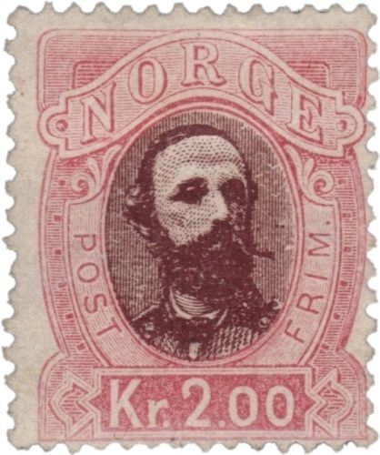
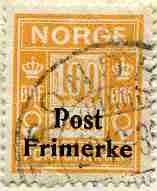
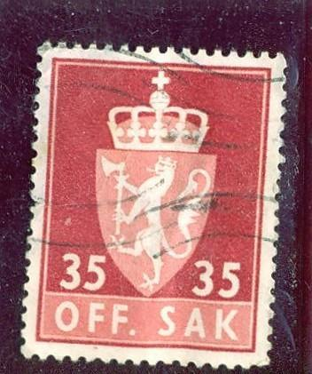
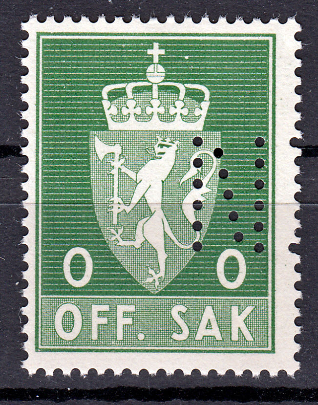
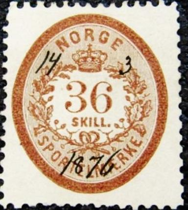
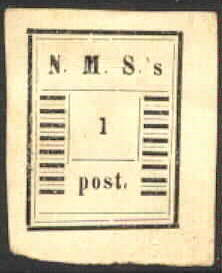

Return To Catalogue - Norway 1855-1877 - Spitsbergen - Local issues overview (bypost)
Note: on my website many of the
pictures can not be seen! They are of course present in the
catalogue;
contact me if you want to purchase it.
For stamps of Norway issued from 1855 to 1877 click here.
1 Kr green (dark and lightgreen) 1 1/2 Kr blue (dark and lightblue) 2 Kr red and brown
There are 6 types (different in the value inscription) of each stamp.
Value of the stamps |
|||
vc = very common c = common * = not so common ** = uncommon |
*** = very uncommon R = rare RR = very rare RRR = extremely rare |
||
| Value | Unused | Used | Remarks |
| 1 K | ** | * | |
| 1 1/2 K | ** | ** | |
| 2 K | ** | ** | |

Reprint sheet from 1978.


1 Kr green 1 1/2 Kr blue 2 Kr red 5 Kr violet
Two types exist of these stamps, with lined background behind the king and with solid background (1911). The 5 Kr only exists with solid background.
Value of the stamps |
|||
vc = very common c = common * = not so common ** = uncommon |
*** = very uncommon R = rare RR = very rare RRR = extremely rare |
||
| Value | Unused | Used | Remarks |
| Lined background | |||
| 1 K | ** | ** | |
| 1 1/2 K | *** | *** | |
| 2 K | *** | *** | |
| Solid background | |||
| 1 K | * | vc | |
| 1 1/2 K | * | c | |
| 2 K | ** | c | |
| 5 K | *** | c | |


A rouletted reprint of the 1 K value was made in 1965 for the
book 'Det Norske Postverks' and another one in 1969 of the 2 K
value.
5 o green 10 o red 20 o blue
Value of the stamps |
|||
vc = very common c = common * = not so common ** = uncommon |
*** = very uncommon R = rare RR = very rare RRR = extremely rare |
||
| Value | Unused | Used | Remarks |
| 5 o | c | c | |
| 10 o | c | c | |
| 20 o | * | * | |

1924: with the letters in 'NORGE' with serifs and line between 'ORE' and 'POST': 10 o green, 20 o violet, 35 o red, 45 o blue. Surcharged '30 =' on 45 o blue (1927?).
1926: with the letters in 'NORGE' without serifs and no line between 'ORE' and 'POST': 10 o green, 14 o orange (1929), 15 o olive, 20 o lilac, 20 o red (1928), 25 o red, 25 o brown (1928), 30 o blue (1928), 30 o grey (1949), 35 o brown, 40 o blue, 40 o grey (1928), 50 o lilac, 55 o orange (1946), 60 o blue and 80 o brown (1946). Surcharged '20=' on 25 o red (1927?), '25 -' on 20 o red (1949), '45 -' on 40 o blue (1949).

With additional inscription 'SVALBARD 1925'
1925: with additional inscription 'SVALBARD': 10 o green, 15 o blue, 20 o lilac, 45 o blue. Surcharged '30=' on 45 o blue (1927?).
Some stamps were overprinted with a large 'V' in 1941: 10 o green, 15 o olive, 20 o red, 25 o brown, 30 o blue, 35 o violet, 40 o black, 50 o brown, 60 o blue. A 10 o green stamp also exist with a white 'V' incorporated in the design. I have also seen a postcard ('BREVKORT') with a black 'V' overprint: 15 o olive.
In a slightly different design 'NORGE' on top I have seen the following values with black 'V' overprint 1 K green, 1 1/2 K blue, 2 K red and 5 K violet.


A rouletted reprint of the 10 o value was made in 1965 for the
book 'Det Norske Postverks'. Two other reprints of the 60 o and
the 45 o Svalbard issue were made in 1969 (4000 stamps were
printed).

Another set of imperforate reprints (I don't know when these were
issued).

2 o brown 3 o orange 5 o lilac 10 o green 15 o blue 20 o lilac 25 o red

A rouletted reprint of the 10 o value was made in 1969 for the
book 'Det Norske Postverks'

10 o green 15 o brown 30 o red 30 o blue

1958 issue, in this design were issued: 25 o green, 30 o violet,
35 o lilac, 40 o red, 45 o red, 50 o light-brown, 55 o grey, 65 o
blue, 80 o brown, 85 o olive, 90 o orange. In the larger design:
1 K green, 1.50 K blue, 2 K red, 5 K violet and 10 K orange.

Later issue
Inscription 'at betale' and 'PORTOMAERKE'
1 o olive 4 o lilac 10 o red 15 o brown 20 o blue 50 o brown
Value of the stamps |
|||
vc = very common c = common * = not so common ** = uncommon |
*** = very uncommon R = rare RR = very rare RRR = extremely rare |
||
| Value | Unused | Used | Remarks |
| 1 o | c | c | |
| 4 o | c | c | |
| 10 o | c | c | |
| 20 o | * | c | |
| 50 o | * | c | |
Inscription 'a betale' and 'PORTOMERKE'(1923)
4 o lilac 10 o green 20 o lilac 40 o blue 100 o orange 200 o violet
Value of the stamps |
|||
vc = very common c = common * = not so common ** = uncommon |
*** = very uncommon R = rare RR = very rare RRR = extremely rare |
||
| Value | Unused | Used | Remarks |
| 4 o | * | * | |
| 10 o | c | c | |
| 20 o | * | c | |
| 40 o | * | c | |
| 100 o | * | * | |
| 200 o | *** | ** | |
Many of these postage due stamps were overprinted with 'Post Frimerke' or 'POST' in 1929 to serve as postage stamps, example:



A rouletted reprint of the 1 o 'at betale' value was made in 1965
for the book 'Det Norske Postverks'. Another reprint of the 200 o
'a betale' followed in 1969.
Stamps with inscription 'OFFENTLIG SAK', 'OFF. SAK' or 'TJENESTEFRIMERKE' are official stamps.
5 o lilac 10 o green 15 o blue 20 o lilac 30 o grey 40 o blue 60 o blue Surcharged '2 2' on 5 o lilac

A rouletted reprint of the 5 o value was made in 1965 for the
book 'Det Norske Postverks'
2 o light-brown 5 o lilac 7 o orange 10 o green 15 o olive 20 o red 25 o brown 30 o blue 35 o violet 40 o grey 60 o blue 70 o brown 100 o violet
5 o lilac 7 o orange 10 o green 15 o olive 20 o red 25 o brown 25 o red (1946?) 30 o blue 30 o grey (1946?) 35 o violet 40 o grey 40 o blue (1946?) 50 o lilac (1947) 60 o blue 100 o violet 200 o orange (1946?) Surcharged '25 - 25 -' on 20 o red (1949)
5 o lilac 7 o orange 10 o green 15 o olive 20 o red 25 o brown 30 o blue 35 o violet 40 o grey 60 o blue 1 K violet
5 o lilac 10 o grey 15 o brown 30 o red 35 o brown 60 o grey 100 o violet

Stamp with inscription 'OFF. SAK'
5 o lilac 10 o grey 15 o brown 20 o blue 25 o green 30 o red 30 o green 35 o red 40 o violet 40 o olive 50 o blue 50 o brown 60 o blue 65 o red 70 o red 70 o olive 75 o green 80 o red 80 o brown 85 o brown 90 o orange 1 K violet 1 K red 1.10 K red 1.25 K red 1.50 K red 2 K green 2 K red 3 K violet 5 K lilac 5 K blue

Proof with "0" as value.
Example, inscription 'DEN NORSKE RIKSTELEGRAF':
Inscription 'PAKKEMAERKE OTTO LARSEN OMNIBUS BRAGERNAES TANGEN':


"TONSBERG OG OMEGNS AUTOMOBIL KOMPANI."; 10 o black on
violet
1872 Inscription "SPORTELMAERKE"

In this and similar rectangular and octagonal designs exist: 1 s
orange, 2 s blue, 4 s brown, 8 s green, 12 s red, 16 s orange, 24
s blue, 36 s brown, 48 s green, 72 s red, 120 s orange, 144 s
blue, 168 s brown, 180 s green, 240 s red.

In 1878 some stamps with inscription "KGL. N.
JUSTERBESTYRELSE" were issued in the values: 1 o, 2 o, 5 o,
10 o, 20 o, 50 o (all in blue) and 1 K, 2 K, 5 K, 10 K, 20 K (all
in brown).
Fiscal stamps with inscription "STEMPELMAERKE" were first issued in 1886:
1886 issue, I have also seen the 1 Kr green (with lilac
background). "NORGE" in straight lettering. In this
type were issued 25 o blue, 50 o brown, 1 K green, 2 K red, 4 K
lilac, 8 K brown, 12 K red, 16 K yellow, 20 K red. In 1899 the
surcharged values 20 o on 25 o, 80 o on 1 K (two types) were
issued. More values were issued in 1900: 10 o red, 20 o blue, 30
o green, 40 o violet, 1.50 K green, 2.50 K grey, 3 K brown, 3.50
K orange, 4.50 K brown, 5 K violet, 5.50 K brown, 10 K orange,
and 15 K brown.
Slightly different design, with "NORGE" in roman
letters. The value tablet is also didfferent. This type was
issued in 1903. The values 10 o red, 20 o blue, 30 o green, 50 o
brown, 2 K red, 4 K violet and 5 K violet exist.
With more pointy arms first issued in 1909. Reduced size, other
values exist.
Literature: 'Scandinavia Revenues European Philately 14' by J.Barefoot Ltd, 52 pages (I haven't seen this book myself).
The following two values exist: 'v.5' (value in Vari, colour black on white or black on yellow, to be used on letters) and 'e.1 v.5' (1 Era 5 Vari, colour black, to be used on parcels).
These stamps were always pen-cancelled (see image above).

There also seems to have been issued another serie in 1894 consisting of two stamps with inscription 'NMSs 1/3 post' and 'N.M.S.'s 1 post' (both in black colour and imperforate). More information can be found on: http://www.nordische-staaten.de/laender/Norwegen/Bypost/bypost.html (in German by Dr. Reinhard Meyer).
A reprint or 'Eftertrykk' of these stamps made in 1968 by A.Bye
in Skoppum (the sheet states only 200 numbered sheets were made).
All four values are printed four times.
black on green (uindlost) black on green (ubesorget) black on lilac (ubesorget)
Value of the stamps |
|||
vc = very common c = common * = not so common ** = uncommon |
*** = very uncommon R = rare RR = very rare RRR = extremely rare |
||
| Value | Unused | Used | Remarks |
| Unindlost | * | * | |
| black on green (ubesorget) | R | R | |
| black on lilac | ** | ** | |
I've seen the 2 Sk blue and 4 Sk red stamps in this design.

"TRONDHEIM SPORVEI PAKKEFRIMERKE 20 ORE" red
Parcel stamps, inscription "NORGES STATSBANER BETALT", winged wheel with crown on top

In this design I have seen: 10 o, 50 o, 100 o, 200 o, 360 o, 600
o, 700 o, 950 o, 1150 o, 1200 o, 1600 o, 2000 o, 2400 o, 2500 o
(all in the colours green and black).

Almanac stamp of 1913, 'ALMANAK STEMPEL 1913 EMIL MOESTUE', other
years exist


{kind=link}
{kind=link}
{kind=link}
{kind=link}
{kind=link}
{kind=link}
{kind=link}